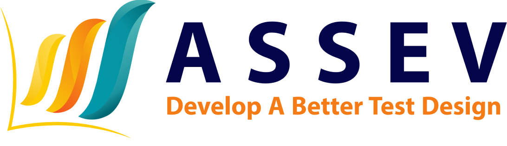

Model diagnostik kognitif
Melaporkan keterampilan mana yang sudah dikuasai siswa, bukan hanya skor total. Riset saat ini menerapkan model G-DINA untuk memetakan kompetensi digital calon guru TI vokasi.
Baca: Memahami CDM →
Peneliti & Dosen
Universitas Pendidikan Ganesha · Pendidikan Informatika
Wiradika adalah peneliti dan dosen di bidang Asesmen & Evaluasi Pendidikan. Minat risetnya berada di pertemuan analitik pembelajaran dan psikometri komputasional, dengan menerapkan metode statistik dan berbasis data untuk meningkatkan mutu asesmen dan hasil belajar.
Mengampu mata kuliah asesmen pendidikan, statistika, dan pemrograman. Aktif meneliti evaluasi pembelajaran dan psikometri komputasional.
Mengembangkan metode komputasional dan alat ukur untuk meningkatkan mutu asesmen di pendidikan tinggi vokasi dan umum.
Benang merahnya adalah pengukuran yang bisa dipakai guru dan pengambil kebijakan untuk bertindak: tes yang menunjukkan apa yang sudah dan belum bisa dilakukan siswa, yang adil bagi setiap kelompok siswa, dan yang tetap dapat dipertanggungjawabkan ketika alat baru seperti model bahasa ikut dipakai.
Melaporkan keterampilan mana yang sudah dikuasai siswa, bukan hanya skor total. Riset saat ini menerapkan model G-DINA untuk memetakan kompetensi digital calon guru TI vokasi.
Baca: Memahami CDM →Memeriksa apakah butir soal bekerja sama bagi kelompok siswa yang kemampuannya setara, dengan analisis differential item functioning.
Baca: Apakah tes ini adil? →Menanyakan kapan skor yang dihasilkan model bahasa dapat dipercaya, dan mengapa model yang konsisten belum tentu benar.
Baca: Konsisten belum tentu benar →Membaca hasil asesmen internasional seperti PISA untuk melihat apa artinya bagi siswa dan kelas di Indonesia.
Baca: Di balik angka PISA →Proyek penelitian dan pengabdian kepada masyarakat yang didanai dan tercatat di SINTA.

Asesmen yang berdiri di atas bukti, bukan asumsi.
AssevLabs adalah lab asesmen berbasis riset milik Wiradika. AssevLabs membawa metode pengukuran dari riset menjadi alat yang dipakai sekolah, peneliti, dan organisasi untuk menyusun instrumen, menjalankan asesmen, dan melaporkan hasil yang bisa ditelusuri dan dipertanggungjawabkan.
Butir soal, kompetensi, atribut, dan Q-matrix, dengan telaah pakar atas isi, bahasa, dan mutu.
Bank soal dan paket asesmen untuk sekolah, proyek riset, dan evaluasi kompetensi di organisasi.
Catatan yang dapat ditelusuri tentang bagaimana setiap instrumen ditelaah dan diperbaiki.
Penskoran dan analisis dengan teori tes klasik, teori respons butir, dan model diagnostik kognitif.
Daftar lengkap tersedia di SINTA · Google Scholar
Presentasi terbaru dibuat sebagai deck web, sehingga bisa dibuka di peramban apa pun dan ditayangkan layar penuh.
Terbuka untuk kolaborasi riset, diskusi akademik, dan pertanyaan seputar asesmen dan evaluasi pendidikan.